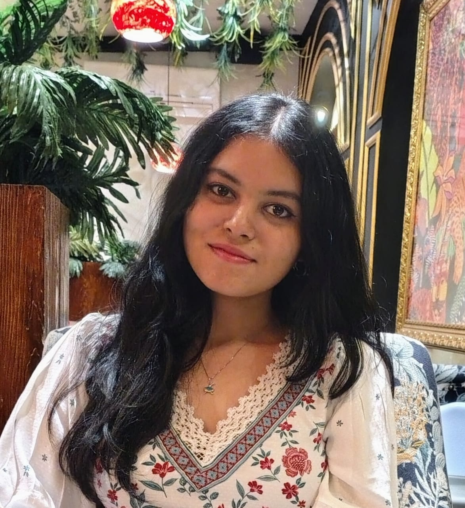

Graduate holding a Bachelor of Technology in Computer Science and Engineering (Class of 2026) from Future Institute of Technology[cite: 1804, 1805]. My research interests align closely in the domains of Computer Vision, Medical AI, and Deep Learning architectures, with a dedicated focus on bridging the gap between advanced conceptual models and high-performance, real-world field applications[cite: 1150, 1151, 1152]. I am looking forward to proceeding with my career in these fields in higher studies.

Future Institute of Technology
Bachelor of Technology in Computer Science and Engineering
Graduated: July 2026 | Kolkata, West Bengal, India
Open to collaborative research opportunities in deep learning healthcare applications and clinical multimodal model engineering.